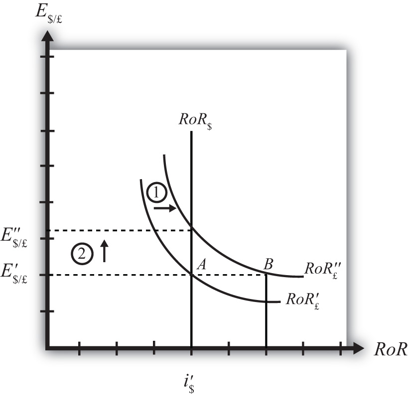

Suppose that the foreign exchange market (Forex) is initially in equilibrium such that RoR£ = RoR$ (i.e., interest rate parity holds) at an initial equilibrium exchange rate given by E′$/£. The initial equilibrium is depicted in Figure 16.9 "Effects of an Expected Exchange Rate Change in a RoR Diagram". Next, suppose investors’ beliefs shift so that E$/£e rises, ceteris paribus. Ceteris paribus means we assume all other exogenous variables remain fixed at their original values. In this model, the U.S. interest rate (i$) and the British interest rate (i£) both remain fixed as the expected exchange rate rises.
Figure 16.9 Effects of an Expected Exchange Rate Change in a RoR Diagram
An expected exchange rate increase means that if investors had expected the pound to appreciate, they now expect it to appreciate even more. Likewise, if investors had expected the dollar to depreciate, they now expect it to depreciate more. Alternatively, if they had expected the pound to depreciate, they now expect it to depreciate less. Likewise, if they had expected the dollar to appreciate, they now expect it to appreciate less.
This change might occur because new information is released. For example, the British Central Bank might release information that suggests an increased chance that the pound will rise in value in the future.
The increase in the expected exchange rate (E$/£e) will shift the British RoR line to the right from RoR′£ to RoR″£ as indicated by step 1 in the figure.
The reason for the shift can be seen by looking at the simple rate of return formula:
Suppose one is at the original equilibrium with exchange rate E′$/£. Looking at the formula, an increase in E$/£e clearly raises the value of RoR£ for any fixed values of i£. This could be represented as a shift to the right on the diagram from A to B. Once at B with a new expected exchange rate, one could perform the exercise used to plot out the downward sloping RoR curve. The result would be a curve, like the original, but shifted entirely to the right.
Immediately after the increase and before the exchange rate changes, RoR£ > RoR$. The adjustment to the new equilibrium will follow the “exchange rate too low” equilibrium story presented in Chapter 16 "Interest Rate Parity", Section 16.4 "Exchange Rate Equilibrium Stories with the RoR Diagram". Accordingly, higher expected British rates of return will make British pound investments more attractive to investors, leading to an increase in demand for pounds on the Forex and resulting in an appreciation of the pound, a depreciation of the dollar, and an increase in E$/£. The exchange rate will rise to the new equilibrium rate E″$/£ as indicated by step 2.
In summary, an increase in the expected future $/£ exchange rate will raise the rate of return on pounds above the rate of return on dollars, lead investors to shift investments to British assets, and result in an increase in the $/£ exchange rate (i.e., an appreciation of the British pound and a depreciation of the U.S. dollar).
In contrast, a decrease in the expected future $/£ exchange rate will lower the rate of return on British pounds below the rate of return on dollars, lead investors to shift investments to U.S. assets, and result in a decrease in the $/£ exchange rate (i.e., a depreciation of the British pound and an appreciation of the U.S. dollar).
Consider the economic change listed along the top row of the following table. In the empty boxes, indicate the effect of the change, sequentially, on the variables listed in the first column. For example, a decrease in U.S. interest rates will cause a decrease in the rate of return (RoR) on U.S. assets. Therefore a “−” is placed in the first box of the table. Next in sequence, answer how the RoR on euro assets will be affected. Use the interest rate parity model to determine the answers. You do not need to show your work. Use the following notation:
+ the variable increases
− the variable decreases
0 the variable does not change
A the variable change is ambiguous (i.e., it may rise, it may fall)
| A Reduction in Next Year’s Expected Dollar Value | |
|---|---|
| RoR on U.S. Assets | − |
| RoR on Euro Assets | |
| Demand for U.S. Dollars on the Forex | |
| Demand for Euros on the Forex | |
| U.S. Dollar Value | |
| Euro Value | |
| E$/€ |